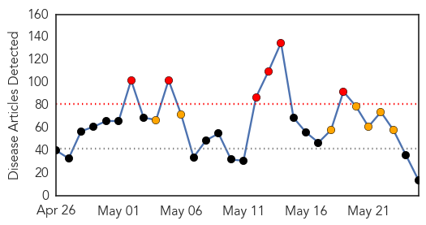
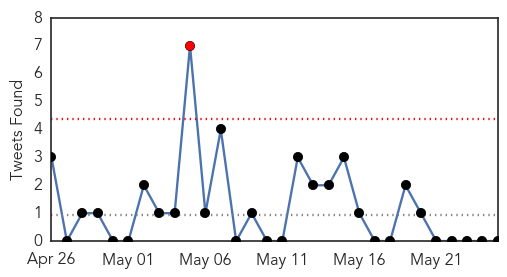
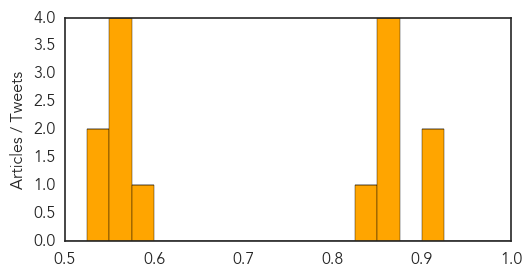

Hemmorhagic Fever
30-Day Web Trend
30-Day Twitter Trend
0 alerts, 0 warnings

Article Locations


Article Confidences

Top Articles:
-
No articles found for May 25, 2014
Top Tweets:
-
No tweets found for May 25, 2014
Unknown
30-Day Web Trend
6 alerts, 7 warnings

30-Day Twitter Trend
1 alerts, 0 warnings

Article Locations

Article Confidences
Top Articles:
- 0.917
- Chicago Tribune
- 0.917
- Chicago Tribune
- 0.866
- Slasher attacks Japan pop girl group AKB48 at fan event
- 0.866
- Santos and Zuluaga in tight Colombia election, runoff likely
- 0.866
- Ukraine's Poroshenko calls for parliamentary election this year
- 0.866
- Four killed in train crash near Moscow, ministry says
- 0.846
- Hospital hit by water outage - national
- 0.585
- Hantavirus remains health threat in Wyoming
- 0.572
- Florida Workers Not Infected With MERS
- 0.570
- Superbug threat as grave as climate change, say scientists
- 0.555
- When fertile soils spread the deadly podoconiosis
- 0.551
- Outbreak of E.Coli tied to Hummus, Sprouts, Walnuts and Dips
- 0.547
- Portland lifts boil-water order
- 0.543
- Kenya : Superbugs 'more deadly than AIDS' as antibiotics become increasingly useless
Top Tweets:
-
No tweets found for May 25, 2014